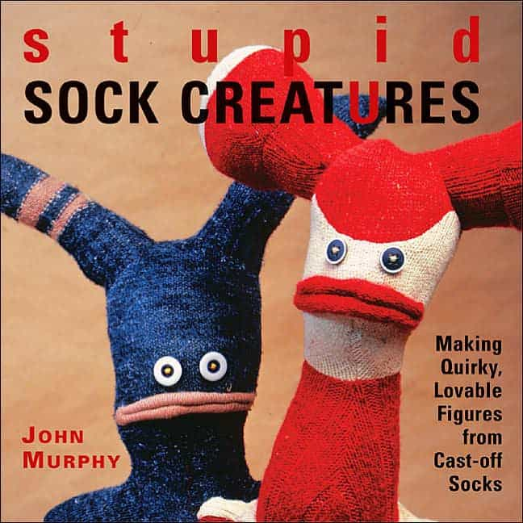
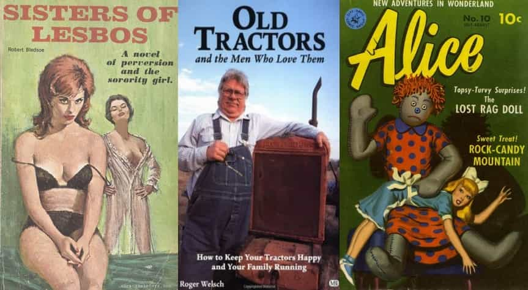
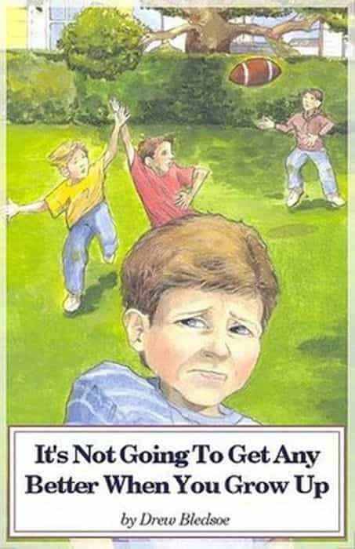

< < < Back
You Should Judge Books By Their Covers – Return Of Kings
One of the biggest feel-good crocks that permeates our politically correct society today is the clichéd statement: “You can’t judge a book by its cover.” For those of whose cognizance is quite a bit south of Forest Gump’s, what that phrase essentially means is that you should not draw assumptions of a person based on what you see on their surface. According to the people who believe that, what a person says or does or looks like (how they dress, how well groomed they are, whether or not they smell like mould) does not matter because deep down they have hidden depths which represent the ‘real’ them, and how they interact with the world is irrelevant compared to who they are ‘inside’.

I was especially touched by chapter 14 : A Rose Grows In The Killing Fields
Not only is that statement outright false, the popular perpetration of it has caused people to become blind to real dangers. It causes countless numbers of people to ignore their instincts and to enter into dangerous situations because those Social Justice Warriors out there told them their fears were unfounded; so that female jogger feels nervous running by those three men in hoodies, but hey it’s only 8 p.m. and there’s still some light out and besides everyone wears a hoodie and it’s not right to judge someone based off their oh god I’m being dragged into the bushes.
There’s no comprehensive study but from the tidbits I’ve read on the subject (mostly in Guns & Ammo and SWAT magazine) numerous people who have experienced street violence – be it robbing, mugging, rape or etc – professed to having a feeling before hand that their attacker was going to attack them. They judged the book by its cover and then completely ignored it because judging someone based on their appearance or actions or what they say is like, mean or something.
From the proud writer of Man Crazy, Mudwoman and Daddy Love. A quick experiment: Guess whether the authour is a man or woman, and try to picture them in your head before clicking here. Were ya close?
The subconscious part of our minds is astonishingly brilliant, even if it’s trapped under the weight of conscious idiocy. There are hundreds of tells we gather from one another through our looks, our speech and our actions. These constitute the covers of the books that are us. The hidden depths that most of us have do not matter. We do not evaluate others for what’s inside them, nor they we.
The vast majority of human interaction is composed of three things; what we say, do and look like. And all three are all that we need to make an accurate assessment of one another. These judgements are not unfair – at least in the realm of relations with other people. Bob could have once saved a baby from a burning building and honestly believes that all children are innocent creatures who need to be protected; if Bob dresses like a hobo, gets sloshed every chance he can, pan handles and spends many nights in the drunk tank, Bob is nothing more than a drunken nuisance to society.
We human beings are not special snowflakes. Admittedly many of us have had semi-unique experiences, and the sum of ones life may be unique in its course and events but the events themselves do not matter nor reflect on who we are. Again, what we say, what we do and how we look is the sum of who we are. The events that have happened to us in our life time only matter insofar as how they affect one of those dynamics.
You could have given your kidney to save a strangers life but if you treat everyone like they owe you something and get mad when they don’t give you what you want you’re simply a spoiled baby. It might not be true deep down inside of you but that is how the world is going to perceive you, and rightfully so. Say-Look-Do. That’s it. That is the cover of your book.

It’s not hard to tell what these things are about
Now in order to pad out this article beyond all reasonable length I’m going to list three examples of people for you to judge. I’ll do my damndest not to lead you to any conclusions but those which you draw on your own.
Example 1
You’re perusing a book store when you see a young woman (18-24) standing in the aisle. She’s reading a romance novel that has recently exploded in popularity, one you know to involve BDSM and sexual slavery. She has ear stretchers, a nose and lip piercing (both are rings) and the tail end of a long tattoo pokes out onto her hand from the right sleeve and onto her neck from collar of her flannel shirt. By the colouring and design both ends belong to a single large tattoo, or two nearly identical ones.
She has short dyed blonde hair which is very long in front, with one side being completely shaved – a hairstyle extremely popular at the moment. Besides her flannel shirt, she is wearing Ugg boots and yoga pants and thick black glasses rims with no lenses in them. Several times, on average every 20-30 seconds, she pulls her iPhone out and checks it briefly before going back to the book.
Who is she? What kind of life does she lead? What is her book cover?
Example 2
You’re in line at a fast food store when a man comes up to the counter and attempts to flag the attention of the nearest worker whom does not immediately respond to him. Once the worker finally acknowledges him the man says, “Excuse me miss, I would like to speak to your manager.” The worker rolls her eyes and goes off, leaving the man standing there. He does not appear affected by the worker’s attitude. He is dressed in jeans and a band t-shirt. His head is completely shaven, and he is in very good physical shape. There is a tattoo on his forearm of a skull pierced by a knife along with a number underneath it, and a little further up is a tattoo of your country’s flag. When the manager shows up he says, “Sorry to bother you ma’am, but we did not get two chicken burgers.” The manager quickly gets him two burgers, and he says thanks her and walks out – but not before holding the door open for an elderly couple.
Who is he? What kind of life does he lead? What is his book cover?
Example 3
You’re reading an article on the internet written by a young woman about how she is a slut and proud of it. The main picture is of her wearing very flattering clothes with a swoop of hair over her face which is tilted down and slightly away from the camera. She does not appear to be unattractive. The article consists of a few anecdotes of her sexual romps, almost all ending with her saying that she broke off the mini-relationship when the boys started to get too clingy. The bottom of her article has a few links to other works authoured by her;
Campus Rape Culture; Men Just Can’t Compete; How Millenials Will Save The World.
There is a small bio of her under that. The picture beside is a straight on shot of her face, which is almost completely different looking from the one used at the top of the article; she is far less attractive then her article photo let on. She is smiling while holding up a fluffy white cat beside her. Her bio reads;
Jane Doe is a Utah born she-devil. A recent graduate of Columbia U, she now lives, writes and loves in New York. In between writing online articles for Well Known magazine and Popular magazine, she’s currently waiting for Currently Hip Director to get back to her about her earth shattering screenplay about Meerkats.
The highest rated comment in the comments section is a man who apparently knows Jane Doe from their home town.
X-Factor95 : hey jane! look at you big city girl! its john bow! lol maybe i should forward this article to your folks ;p
Jane Doe (replying to X-Factor95) : Hey John! Yeah living the dream here LOL. Plz don’t forward the article to my folks, they don’t know I’m a writer yet I want it to be a surprise lol
Who is she? What kind of life does she lead? What is her book cover?
I bet most of us came to similar conclusions, although obviously I couldn’t abstain completely from leading a bit. Of course there could be variables; there are always some who are the exception. But like most things it’s a small percentage, 10% at max. For the most part your first impressions of 90% of the people you meet are invariably right. I can spend an hour with a person and have them pretty much figured out, hidden depths and all. And I’m an idiot (at least according to most of the comments on my articles). Surely you, sweet reader, can do it in 30 minutes. A spade’s a spade, if it quacks it’s a duck and a cigar is almost always just a cigar.
Pictured: a rare and disappointing exception
React to your judgements appropriately. They’re most likely right and you are not prejudiced, racist or any other sort of shame word for doing so. You’re simply responding to the innate knowledge and analysis that resides in all of us, and which many choose to ignore to their own suffering and peril. How a person interacts with and presents themselves to you is all that matters. Despite what the feel good mainstream tells us, judging a book by its cover is not irrational. To do otherwise is the real insanity. And for all you hidden depth believers out there, it’s best to stop waiting for people to surprise you. They’re not going to. Schools really should stop teaching kids useless utopian ideals like these and get back to the fundamentals.

Read More: How Can I Go Back?


{kind=link}
{kind=link}
{kind=link}
{kind=link}
{kind=link}
{kind=link}